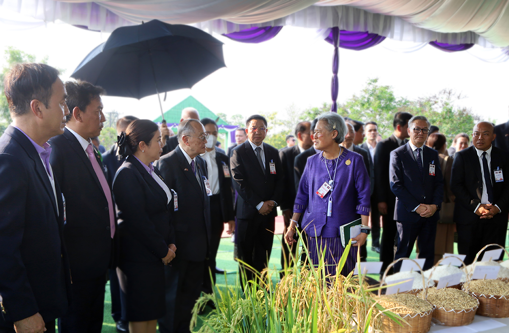
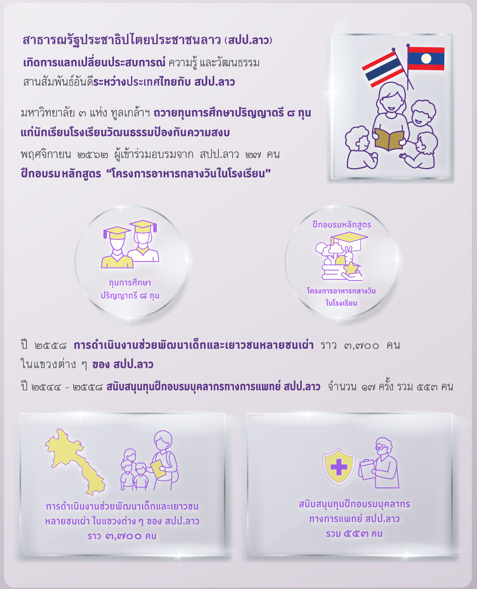
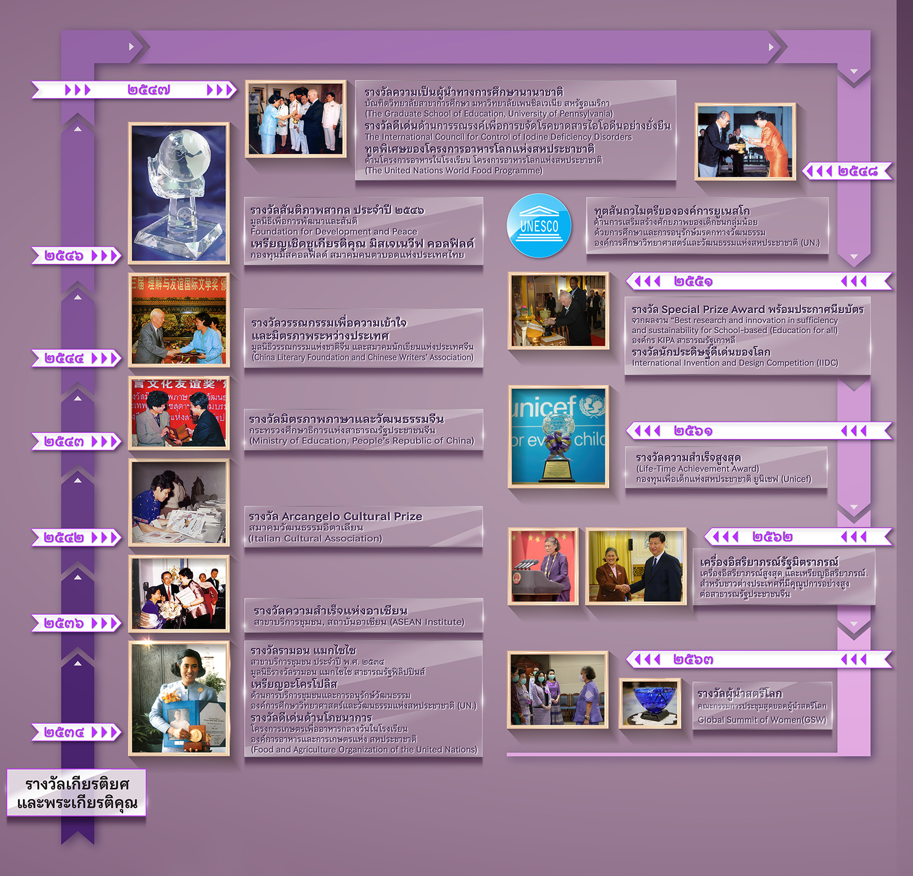

พระราชกรณียกิจ
ด้านความสัมพันธ์กับต่างประเทศ

main.jpg
ขนาดแนะนำ: 1120 x 520 px (แนวนอนเดี่ยว)
 signature.png (ลายเซ็นพื้นใส ไม่มีกรอบ)
signature.png (ลายเซ็นพื้นใส ไม่มีกรอบ)
สมเด็จพระกนิษฐาธิราชเจ้า กรมสมเด็จพระเทพรัตนราชสุดา ฯ สยามบรมราชกุมารี ทรงมีพระเมตตาและทรงห่วงใยในทุกข์สุขของผู้คนมิได้จำกัดอยู่เพียงพสกนิกรชาวไทยเท่านั้น หากยังแผ่ไพศาลไปถึงเพื่อนบ้านในภูมิภาคเอเชีย อาทิ สาธารณรัฐประชาธิปไตยประชาชนลาว สาธารณรัฐแห่งสหภาพเมียนมา ราชอาณาจักรกัมพูชา สาธารณรัฐสังคมนิยมเวียดนาม ประเทศมองโกเลีย ราชอาณาจักรภูฏาน สาธารณรัฐประชาชนบังกลาเทศ สาธารณรัฐอินโดนีเซีย สาธารณรัฐฟิลิปปินส์ และสาธารณรัฐประชาธิปไตยติมอร์-เลสเต โดยทรงขยายผลสำเร็จจากโครงการอันเนื่องมาจากพระราชดำริไปสู่เด็ก เยาวชน และผู้ด้อยโอกาส เพื่อให้แต่ละประเทศได้น้อมนำไปประยุกต์ใช้ตามบริบทของตนอย่างเหมาะสม เกิดผลที่เป็นรูปธรรมและยั่งยืนในระยะยาว นอกจากนี้ ยังทรงประสานความร่วมมือกับองค์การระหว่างประเทศหลายแห่ง เช่น องค์การยูเนสโก (UNESCO) โครงการอาหารโลก (WFP) องค์การอาหารและเกษตรแห่งสหประชาชาติ (FAO) รวมถึงภาคเอกชนเพื่อร่วมแรงร่วมใจสร้างสรรค์ความผาสุก ความสงบ และคุณภาพชีวิตที่ดีแก่ผู้คนในโลกยุคไร้พรมแดน
ด้วยเหตุนี้ สมเด็จพระกนิษฐาธิราชเจ้า กรมสมเด็จพระเทพรัตนราชสุดา ฯ สยามบรมราชกุมารี จึงทรงได้รับการยกย่องจากนานาประเทศในพระปรีชาสามารถ รวมถึงแนวการปฏิบัติพระราชกรณียกิจด้วยพระวิริยอุตสาหะและการพัฒนางานอย่างไม่หยุดยั้ง จนเกิดผลสำเร็จที่เป็นรูปธรรม และกลายเป็นแรงบันดาลใจในการพัฒนาทรัพยากรมนุษย์อย่างต่อเนื่อง

vertical_hero.jpg
ขนาดแนะนำ: 600 x 850 px (แนวตั้งเดี่ยว)
ตัวอย่างผลสำเร็จของโครงการความร่วมมือด้านการพัฒนาคุณภาพชีวิตเด็กและเยาวชนในโรงเรียนสาธารณรัฐประชาธิปไตยประชาชนลาวตามพระราชดำริฯ ที่ทรงพระกรุณาโปรดเกล้าฯ ให้จัดทำขึ้น เพื่อส่งเสริมโภชนาการและสุขอนามัยในเด็กและเยาวชน การทำการเกษตรที่เป็นมิตรกับสิ่งแวดล้อมในโรงเรียน และการอนุรักษ์ทรัพยากรธรรมชาติ และสิ่งแวดล้อม รวมไปถึงการอนุรักษ์ศิลปะและวัฒนธรรมท้องถิ่น มีโรงเรียนที่เข้าร่วมโครงการในระบบประถมศึกษา และมัธยมศึกษา จำนวน ๑๕ แห่ง จาก ๖ แขวง และเสด็จพระราชดำเนินไปทรงติดตามความก้าวหน้าการดำเนินงานย่างต่อเนื่อง ได้ทอดพระเนตรชีวิตความเป็นอยู่ของประชาชนสาธารณรัฐประชาธิปไตยประชาชนลาวอย่างใกล้ชิดและทรงรับทราบถึงปัญหาและอุปสรรคต่าง ๆ จึงมีพระราชดำริให้ขยายความร่วมมือระหว่างประเทศในหลายมิติ เพื่อยกระดับคุณภาพชีวิต

timeline.jpg
ขนาดแนะนำ: 600 x 850 px (แนวตั้งเดี่ยว)